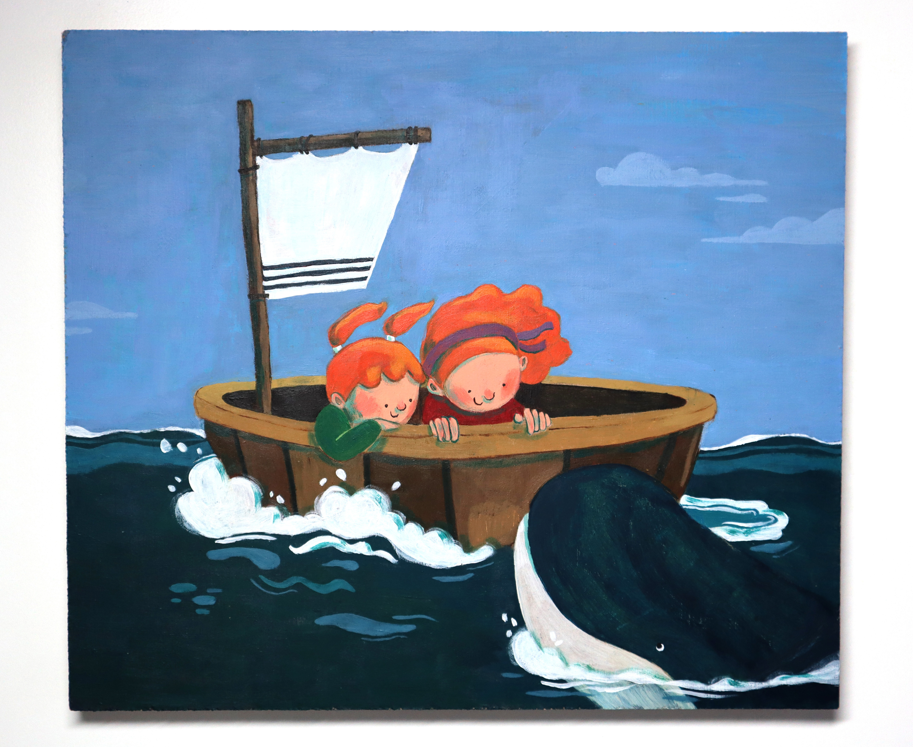

Schilderijen
Bij interesse in één van deze werken of in een schilderij op maat, kan je me hier contacteren.
2026 Walvis (meisjes in boot) – acryl op hout, 21x24
2025 Als een vis in het water (meisje in aquarium) – acryl op hout, 12x21
2025 Nooit alleen (lezende jongen) – acryl op hout, 11x20
2023 Monsters in het zwembad (vrouw met badmuts) – acryl op hout, 17x20
2023 Dit is vakantie (autofile) – acryl op hout, 12x20
2022 Aan zee (man op strandhanddoek) – acryl op hout, 11x20

